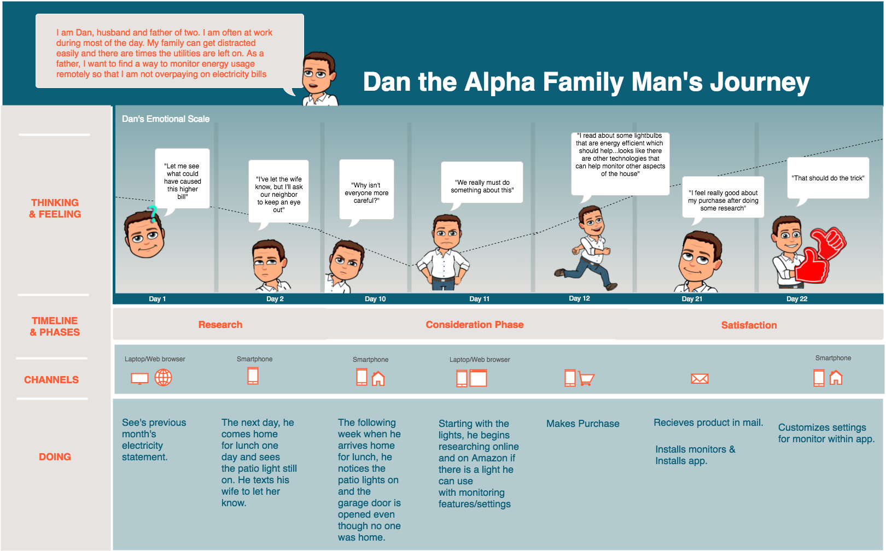
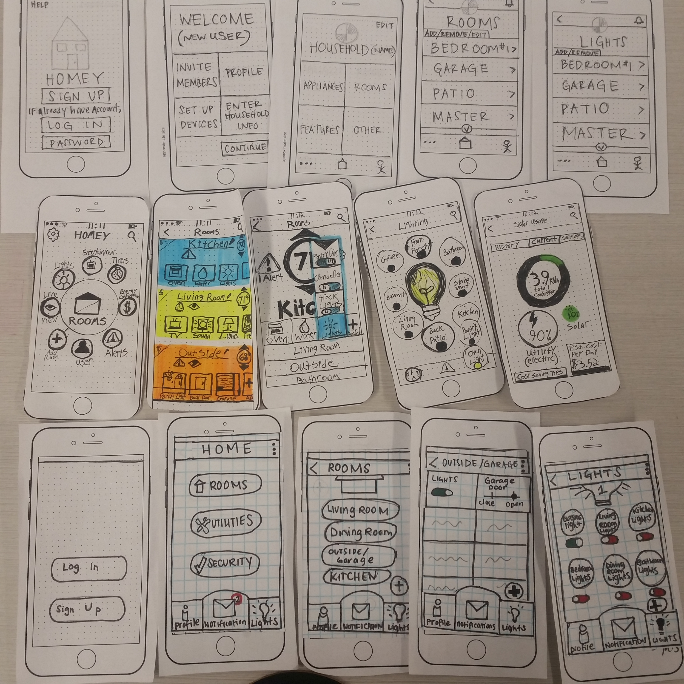
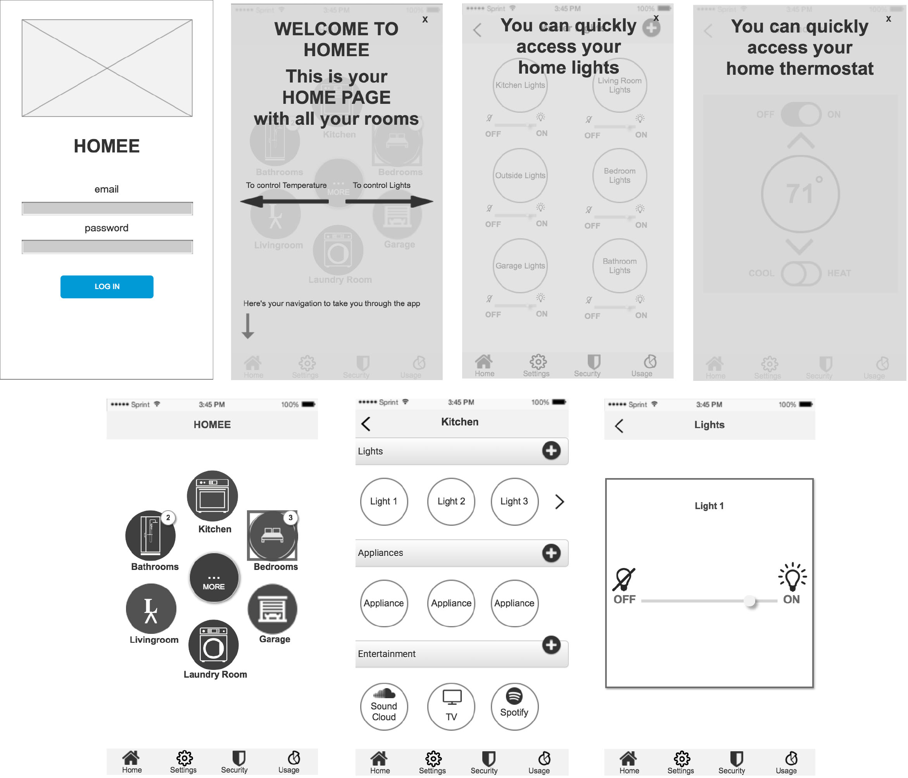
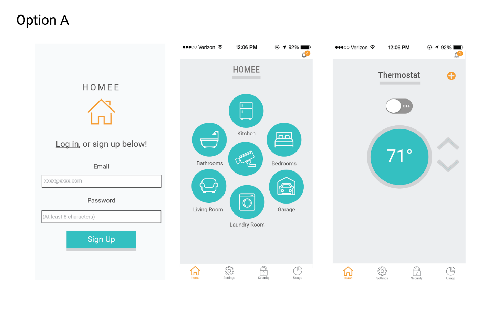

Mock Project: Our team of four was given six weeks to create a digital solution for smart home technology.
The Challenge
To understand the habits of consumers in their current home environment and find out where the opportunity of using a smart home technology app is.
To accomplish our solution we broke the UX and UI process into 6 one week sprints:
- Research
- Synthesis
- Ideation/Concept Testing
- User Interface Design
- Prototyping/Usability Testing
- Refinement
Research
We surveyed the landscape and researched competitors in the space, and found the availability of smart home technology is still limited; the landscape is very fragmented and there isn’t an integrated way for users to control their whole home.
To supplement our quantitative research, we surveyed 97 and recruited 13 interviewees. We made sure to reach a range of demographics and those who considered themselves tech savvy and not. We also interviewed those who have smart home technology, no matter how advanced, to try to get an understanding of what drove them to purchase in the first place. This allowed us to get a variety of responses and data.
Through our interviews and research we uncovered some common values and frustrations.
- Values: Have control of home, even while at work; live with convenience and feel safe and secure
- Frustrations: Roommates or family members forgetting to turn off appliances, high utility bills, and lack of feeling safe.
 These initial interviews revealed that people are often confronted with the challenge of needing to be two places at one time. People want to be able to check in on their homes while at work.
These initial interviews revealed that people are often confronted with the challenge of needing to be two places at one time. People want to be able to check in on their homes while at work.
This helped us begin drawing commonalities and patterns to create our personas, identify our problem, and establish our design principles.
Synthesis
Problem: The working professional needs a convenient way to remotely operate multiple home technologies because it is challenging to monitor their home environment when most of their time is spent at work.
Our primary persona Dan, “The Alpha Family Man,” strives to balance home and work life and likes to always be in the know of what is going on in his home. This helps him ensure that his family and home were both secure.
Dan noticed his family members often left the lights on when away. On a couple of occasions when he stopped by the house during his lunch break, the garage door was even left open. Dan was concerned and felt a change needed to be made.
Thus we aimed to create a seamless experience for Dan, one in which he could effortlessly manage his home at any time. Because of his utilitarian mentality, it was imperative for us to design a product that was clean and clear. We aimed to create an application that provided a trustworthy and secure way to safely monitor his home and at the same time, be able to anticipate and cater to his and his family’s personal needs.
Ideate
Because previous research had expressed roommates and family members often forgot to turn off lights, we decided to base our app around the idea that testers want to check in on certain parts of their house remotely, particularly to see if a light had been left on at their home.
With our problem and design framework in mind, we individually came up with divergent paper prototype solutions/navigational ideas. We then regrouped to critique one another’s sketches and ideas before reaching out to testers.
We tested six users with our paper prototypes through POP. Half fit into our main persona category, were homeowners, and between the ages of 40-58. The other half fit into our secondary persona category—they rented homes with roommates and were ages 25-34. This helped us gather a variety of feedback and guide us forward.
Overall, the users were able to navigate and complete most of the tasks presented to them. However, as we interviewed and observed our users, we found several common occurrences. Users questioned how realistic the app was, and incomplete flows or incorrect use of icons/labels that weren’t what the users expected confused them.
- Did I successfully turn the light off? Not seeing a confirmation page so unable to tell
- What are the differences between Features, Appliances, Utilities, and “Other” mean?
- Am I turning off one light or all the lights in the garage? How does it know?
- What do these icons mean?
With the test only requiring one task (checking on lights), we decided to incorporate additional tasks to better understand users’ mental models. With four prototypes, we moved forward with three testing the different organizational and navigational patterns when checking devices or rooms, while one tested on a more elaborate setup and onboarding process.
The tasks we focused on
- Onboarding
- Adding Devices
- Navigational patterns to access devices
Findings
- Onboarding: Users tended to skip the onboarding process; we thus agreed to make the onboarding an engaging, progressive, and educational onboarding experience, where they can actually setup a device by the end of onboarding.
- Adding devices: We found the mental mode was to add a device from the room rather than a separate page such as Settings (where it was previously located)
- Accessibility: We found the mental mode was to have both options; having a quick access or “Quick Lights” page and ability to adjust devices through entering the room.
This wireframe was further refined based on these user testings and peer critiques.
User Interface Design - Research
We began research on our competitors to better understand the colors currently used in the industry, which inspired us to create color themes that strayed from the common colors of blue, orange, and green.
Since most of our competitors used blue, I decided to balance orange with a turquoise color to blend blue and green. I chose orange to represent health and energy; blue for trust, precision, and calmness; and green for stability and freshness. I took into account the principles of personable, clean and clear, and seamless in terms of visual design.
User Interface Design - Prototype
So with four prototypes and one day, we observed five testers’ behaviors and understanding of our updated navigational patterns and various interface elements with InVision.
We began the test with several questions about their current lifestyle and their basic knowledge of smart home technology. They were then presented with the four prototypes, each having specific tasks and a specific background as to whether they were new or existing users. The team worked together to observe, take notes, and ask questions while the users completed the tasks and walked us through their thinking process.
We asked a couple questions after each prototype to understand how each of the colors and style made them feel. Once they had gone through all four prototypes, we asked them to reflect and explain which app design they favored the most.
Refinement
In terms of visual design, we were able to easily find that users appreciated when icons and text were next to each other so as to fully grasp the information. However, we were unable to conclude a favorite color or style from users. We tried to get them to convey how the colors made them feel, but results were still inconclusive. Thus we launched a survey and with screenshots of all four prototypes, asked them to
- pick which one was their favorite visually and
- which one they found to be visually appropriate for a smart home technology application.
My design received approximately 40% as favorite for both questions and found 33% of the comments nicely reflecting our design principles. Thus we moved forward with the visual design for mine and moved forward with a teammate’s Invision flow since it provided the least confusion out of all four prototypes.
We believe we’ve solved the problem and have provided a way to have a visually clean and clear design that fits to the individual user. He or she can seamlessly operate multiple home technologies and have the convenience to monitor their home environment while at work.
What I Learned
With my previous experience in media planning and strategy, I found similarities in skills that I was able to leverage during both of the UX and UI processes. It was easy for me to not get lost into the details and pull us back to focus on the main goal of our project. Not coming from a design background made it easy for me to design for the user. However, as someone used to focusing on the big picture, it required more dedication on my end to concentrate on the intricate details required when designing the visual interface.
In addition, I definitely learned and improved on the skill of user testing and interviewing. From having done many of the interviewing and note-taking for the team, I gained experience and practice in getting the user comfortable and encouraging them to elaborate on their thoughts when applicable. Having this experience helped set the stage for how I was to approach my first UX client project.